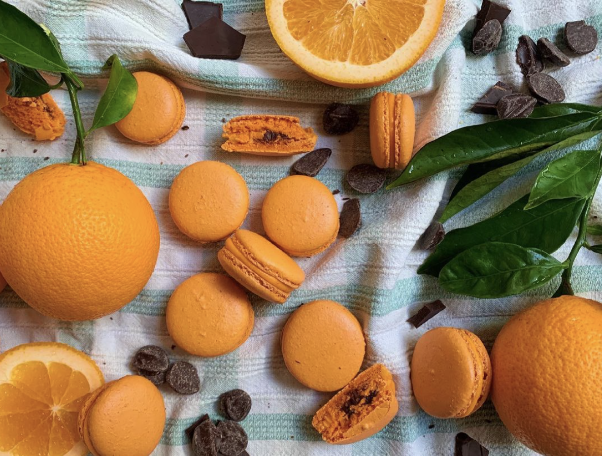
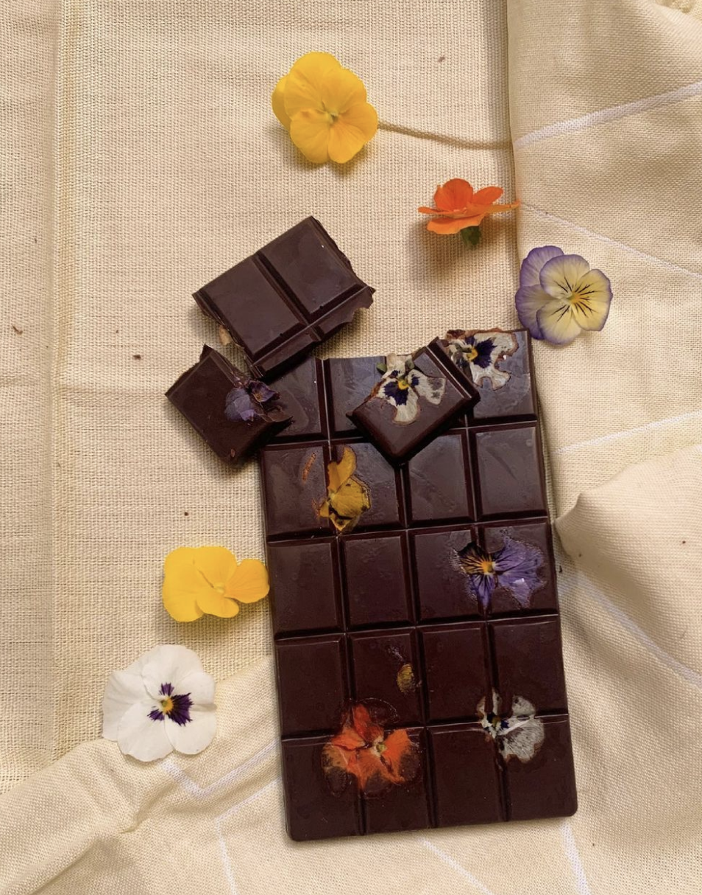
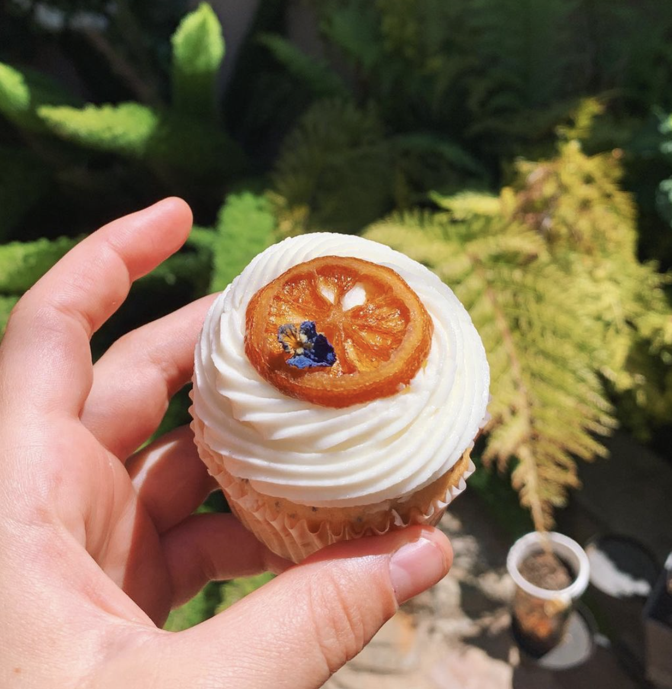
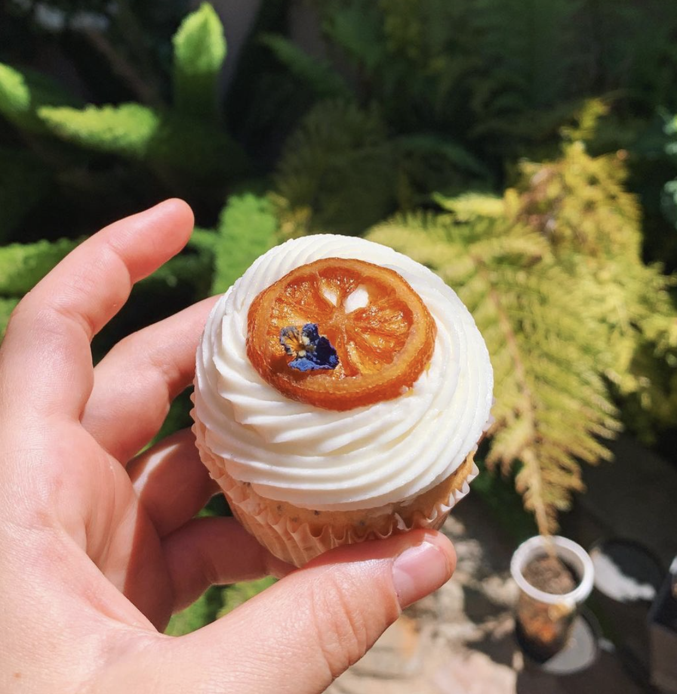
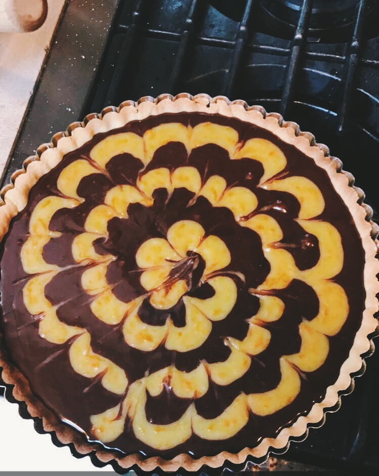
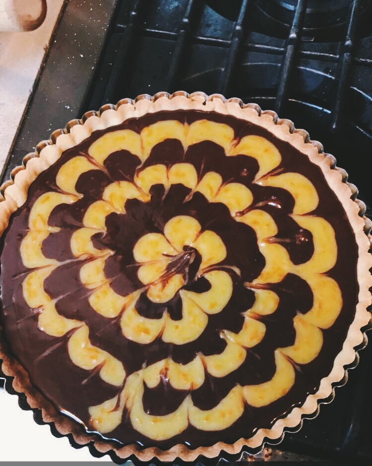
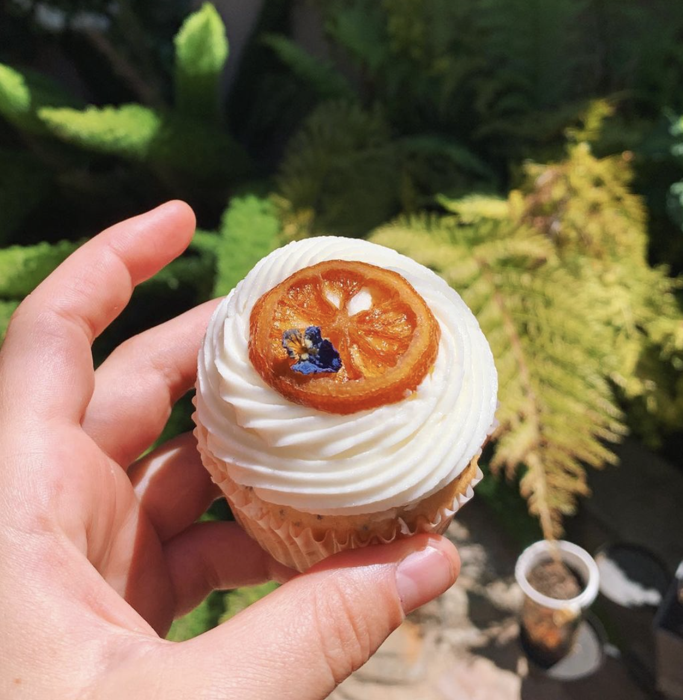
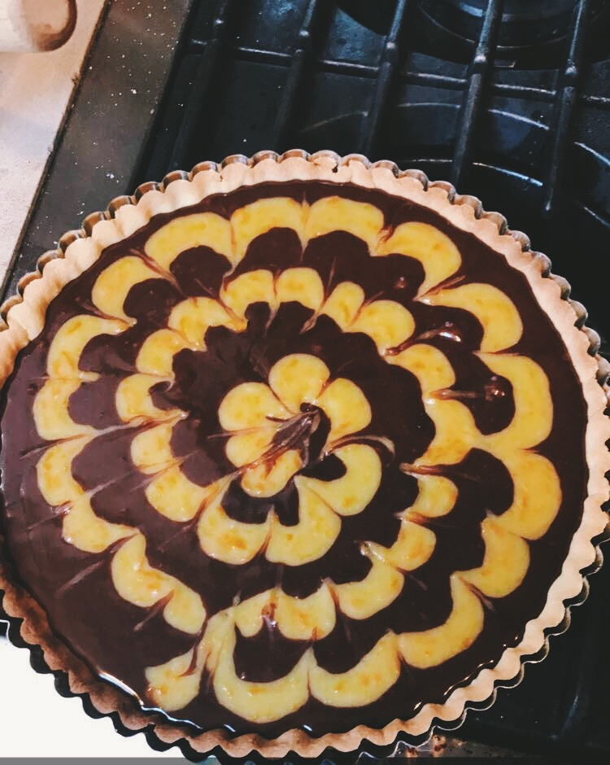

My Baking
I love love sugar and taught myself how to bake to feed that addiction. Baking is another creative outlet that lets me try out different flavors, fail, and improve. It is also a mechanism through which I get to connect with people, by cooking with friends and family or saying thank you to an advisor with a macaron. This is a feed of my instagram @what__i__bake where I get to try out new ways of consuming sugar.



 

 


